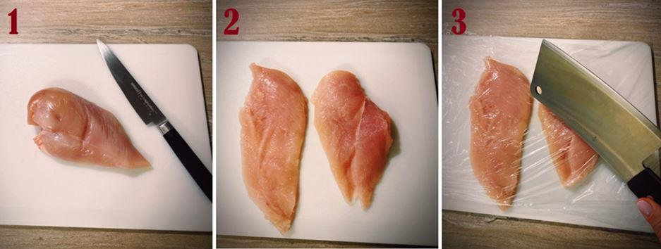
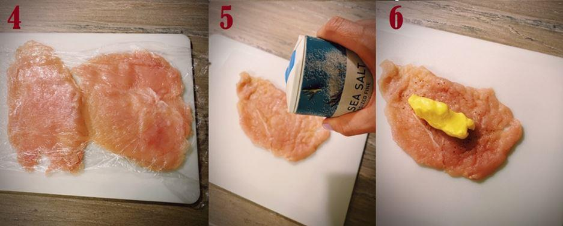
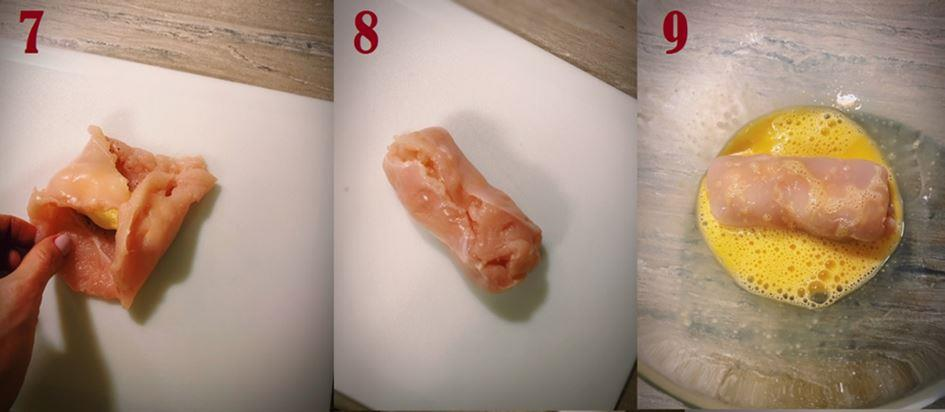
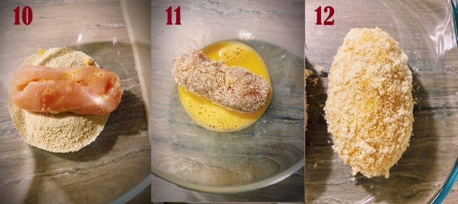
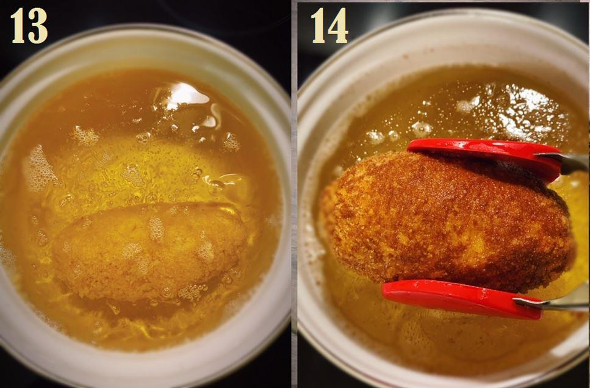

Une fois de plus, nous avons affaire à une recette fièrement revendiquée comme russo-ukrainienne, mais qui est en réalité profondément marquée par l’influence des cuisiniers français. Ce sont eux, en effet, qui ont introduit l’utilisation de viandes nobles coupées en suprême dans la confection des « côtelettes » au 19ème siècle, viandes qu’ils farcissaient alors très richement pour satisfaire les convives de l’aristocratie. La petite histoire voudrait que le poulet à la mode de Kiev, une simplification de ces riches « côtelettes », soit né en 1912 à Saint Pétersbourg au sein du Club des Marchands, puis qu’il ait été repris en 1947 dans un restaurant soviétique de Kiev. Il va sans dire que les Kiéviens contestent cette version des choses et prétendent que ce sont bien eux qui ont inventé la « kotleta-de-volyay po-kievski » il y a bien longtemps. Le mystère demeure entier, même si la piste pétersbourgeoise semble mieux documentée.
On sert généralement ce plat très calorifique seul ou accompagné d’une purée de pommes de terre, et sa farce peut varier selon les goûts et les régions : du beurre doux et rien d’autre, ou un mélange de beurre, d’herbes diverses et d’ail. Dans ma région d’origine, on le trouve généralement dans sa version la plus basique, et j’avoue qu’il s’agit pour moi d’une « Madeleine de Proust ». Je garde en mémoire le plaisir d’acheter ces boules toutes chaudes à la volée dans les petits kiosques qui n’existent malheureusement plus près de la gare de Volgograd. Nous croquions dedans, et elles nous réchauffaient avant de retourner affronter le froid des vigoureux hivers des rives de la Volga. C’est cette recette, toute simple, que je vous propose aujourd’hui et sans réelles proportions – vous les adapterez à vos besoins du jour.
Ingrédients
(QUANTITÉS À ADAPTER AU NOMBRE DE CÔTELETTES SOUHAITÉES)
Blancs de poulets
Beurre doux
Huile neutre à frire
Œuf battu
Chapelure ou pain râpé
Sel et poivre
Préparation
Séparer les blancs de poulet en deux escalopes (images 1 & 2).
Après les avoir placées sous un film alimentaire, aplatir les blancs de poulet avec un marteau attendrisseur, un hachoir ou tout autre objet ad hoc (image 3 & 4).
Saler et poivrer à votre goût (image 5).
Après l’avoir laissé un peu ramollir, former une boule de beurre et la placer au centre de chaque escalope (image 6).
Rouler le tout en une boule la plus hermétique possible (images 7 & 8).
Battre l’œuf ou les œufs puis passer cette boule dans l’œuf battu (image 9).
Commencer à paner la boule (image 10), puis repasser dans l’œuf (image 11) afin d’obtenir une couverture complète et homogène de la boule (image 12).
Après avoir bien fait chauffer l’huile, faire frire (image 13) jusqu’à obtenir une jolie couleur brune et un beau croustillant (image 14).
Servir immédiatement.
Vous pourrez présenter vos « côtelettes » avec une bonne purée de pommes de terre maison (image 15), le plat en sera d’autant plus copieux et satisfaisant pour tous, et notamment les enfants !
Partager cette page